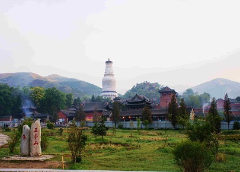
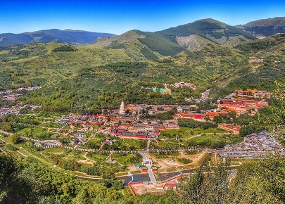

morly旅游网
雄居千仞上， 檐翘角铃鸣。 虎震三秦地， 龙吟万壑风。 山门封冷月， 金顶度流星。 色相何人断？ 莲台五蕴空
《名山志》载：“五台山五峰耸立，高出云表，山顶无林木，有如垒土之台，故曰五台。”五台山是中国唯一一个青庙黄庙共处的佛教道场。截至2017年，五台山有寺院47处，台内39处，台外8处，其中多敕建寺院，多朝皇帝前来参拜。著名的有：显通寺、塔院寺、菩萨顶、南山寺、黛螺顶、广济寺、万佛阁等。
五台山属太行山系的北端，跨忻州市五台县、繁峙县、代县、原平市、定襄县，周五百余里。介于北纬38°50'—39°05'、东经113°29'—113°44'之间，由一系列大山和群峰组成。其中五座高峰峰顶平坦如台，故名五台。又因山上气候多寒，盛夏仍不见炎暑，故又别称清凉山。方圆达250千米，总面积592.88平方千米。
地层完整丰富，特别是前寒武系地层典型奇特，是中国地质科考的重点地区。五台山境内的绝大部分地层组段，都是以该地区的山、水、村、镇命名的，它们在地质学领域具有重要的位置和作用。
 五台山位居中国四大佛教名山之首，称为“金五台”，为文殊菩萨的道场。五台山并非一座山，它是坐落于“华北屋脊”之上的一系列山峰群，景区总面积达2837平方千米，最高海拔3061米。五座山峰（东台望海峰、南台锦绣峰、中台翠岩峰、西台挂月峰、北台叶斗峰）环抱整片区域，顶无林木而平坦宽阔，犹如垒土之台，故而得名。五台山是中国唯一一个青庙（汉传佛教）黄庙（藏传佛教）交相辉映的佛教道场，据传拥有寺庙128座，现存寺院共47处，台内39处，台外8处，其中多敕建寺院，多朝皇帝前来参拜。著名的有：显通寺、塔院寺、菩萨顶、南山寺、黛螺顶、广济寺、万佛阁等。
五台山现有建筑比较完整的寺院95处，其中国家重点文物保护单位6处：南禅寺、佛光寺、显通寺、广济寺、岩山寺（繁峙县）、洪福寺（定襄县）；省级重点文物保护单位15处：塔院寺、菩萨顶、圆照寺、罗睺寺、殊像寺、碧山寺、南山寺、龙泉寺、金阁寺、尊胜寺、延庆寺、公主寺（繁峙县）、三圣寺（繁峙县）、惠济寺（原平市）、石佛堂（河北省阜平县）；其余为县级重点文物保护单位。从宗教活动场所的角度，被公布为全国重点寺院的有11处：显通寺、塔院寺、菩萨顶、罗睺寺、殊像寺、碧山寺、金阁寺、广宗寺、广仁寺、黛螺顶、观音洞。
内容整理至网络，如有侵权，请联系我们！1255394075@qq.com